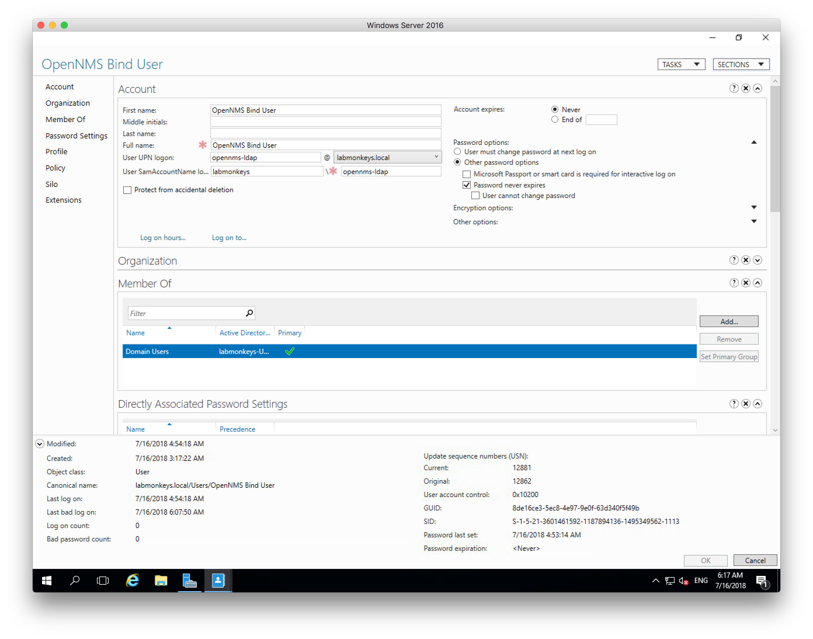
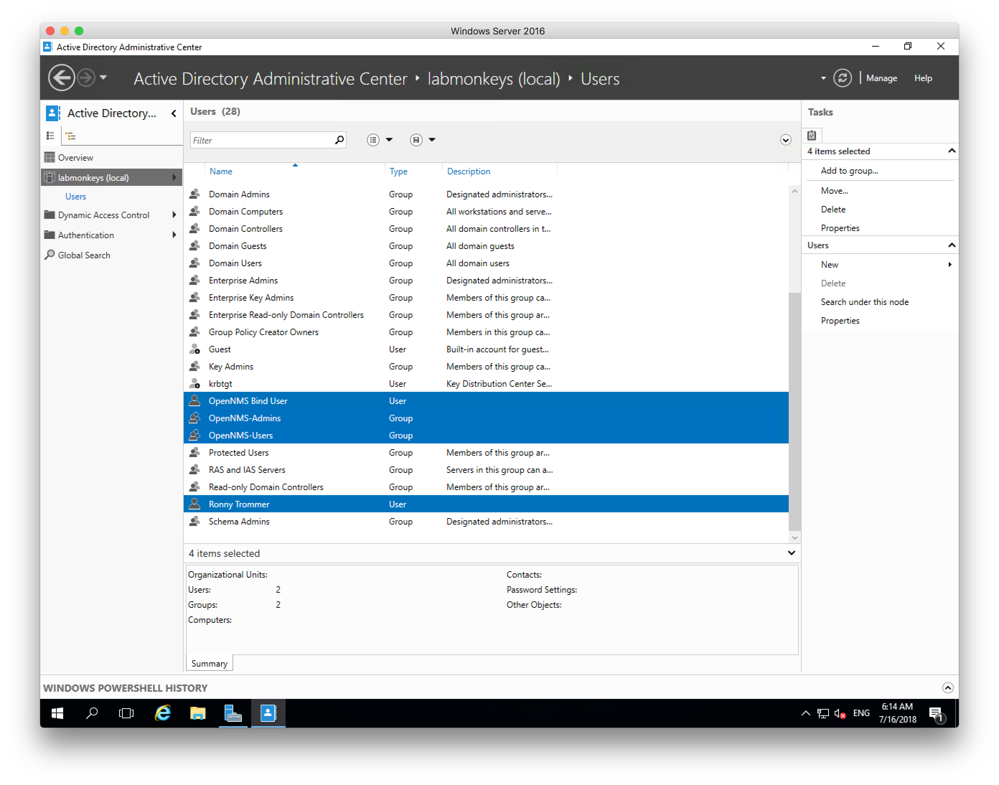

Authenticate OpenNMS Horizon with Active Directory on Windows Server 2016
Centralized authentication is a core service as soon you have a network with more than 3 computers. This article is about how to authenticate a OpenNMS Horizon 22.0.1 against an Active Directory provided on a Microsoft Windows Server 2016. I’ll focus here on the Active Directory and Spring configuration parts, securing the connection with LDAPS and using self-signed certificates in Java is another topic and not covered here.
In this example the domain is called labmonkeys.local and the Microsoft Windows Server has the IP address 192.168.178.220.
The user name for the bind user is OpenNMS Bind User with the password MyPass123!.
We want to have two Active Directory groups, one named OpenNMS-Admins and a second one name OpenNMS-Users and we only want to allow users in these groups to login to the OpenNMS Horizon web application.
The user within the group OpenNMS-Admins can configure OpenNMS Horizon and the user in OpenNMS-Users are regular OpenNMS Horizon users without access to the administration area in the Web UI.
Step 1: Create an user which to bind against LDAP to execute search queries 
Step 2: Create the Groups in Active Directory and assign the Users into the groups 
Step 3: Test the connection with ldapsearch and the bind user from your OpenNMS Horizon server
ldapsearch -x \
-D 'cn=OpenNMS Bind User,cn=Users,dc=labmonkeys,dc=local' -W \
-b 'cn=Users,dc=labmonkeys,dc=local' -h 192.168.178.220
Step 4: Enable external authentication in OpenNMS Horizons Spring security context
vi ${OPENNMS_HOME}/jetty-webapps/opennms/WEB-INF/applicationContext-spring-security.xml
Uncomment the following line:
<authentication-provider ref="externalAuthenticationProvider" />
Step 5: Enable the external Active Directory Authentication security context
cd ${OPENNMS_HOME}/jetty-webapps/opennms/WEB-INF/spring-security.d/
cp activeDirectory.xml.disabled activeDirectory.xml
Step 6: Configure LDAP server for authentication
<beans:bean id="contextSource" class="org.springframework.ldap.core.support.LdapContextSource">
<beans:property name="urls">
<beans:list>
<!-- List one or more of your Active Directory domain controllers here -->
<beans:value>ldap://192.168.178.220:389/</beans:value>
</beans:list>
</beans:property>
<!-- An optional base DN. Every user and group below is relative to this. -->
<beans:property name="base" value="dc=labmonkeys,dc=local" />
<beans:property name="authenticationSource" ref="authenticationSource" />
</beans:bean>
Step 7: Configure bind user to search for LDAP objects
<beans:bean id="authenticationSource" class="org.springframework.ldap.authentication.DefaultValuesAuthenticationSourceDecorator">
<beans:property name="target" ref="springSecurityAuthenticationSource"/>
<!-- Identify an unprivileged user for initial binding to the directory -->
<!-- In some cases, expressing the user as an LDAP DN is the right way -->
<beans:property name="defaultUser" value="CN=OpenNMS Bind User,CN=Users,DC=labmonkeys,DC=local"/>
<!-- In other cases, it's necessary to express it in user@domain format -->
<!-- <beans:property name="defaultUser" value="opennms_bind@example.org"/> -->
<!-- Specify the unprivileged bind user's password here -->
<beans:property name="defaultPassword" value="MyPass123!"/>
</beans:bean>
Step 8: Set the user search to CN=Users
<beans:bean id="userSearch" class="org.springframework.security.ldap.search.FilterBasedLdapUserSearch">
<beans:constructor-arg index="0" value="CN=Users" />
<!-- More complex filters are possible depending on the layout of your directory -->
<beans:constructor-arg index="1" value="(sAMAccountName={0})" />
<beans:constructor-arg index="2" ref="contextSource" />
<beans:property name="searchSubtree" value="true" />
</beans:bean>
Step 9: Set the search path for groups for role mapping
<beans:bean id="userGroupLdapAuthoritiesPopulator" class="org.opennms.web.springframework.security.UserGroupLdapAuthoritiesPopulator">
<beans:constructor-arg ref="contextSource"/>
<!-- Common LDAP container for the user and admin groups listed below -->
<beans:constructor-arg value="cn=Users" />
Step 10: Restart OpenNMS Horizon and login with your Active Directory User
For troubleshooting you can watch the Jetty web log.
tail -f ${OPENNMS_HOME}/logs/jetty-server.log | grep "LDAP:"